Hongmei Kang(康红梅)
|
 |
Research Interests
- Isogeomertic analysis(IGA)
- Computer Aided Geometric Design(CAGD)
- CAD/CAE Integration
- Deep Learning
Education and Work Experience
- Associate Professor, Soochow University, 2017.8–Now.
- Postdoctoral Fellow, Italian National Research Council, 2016.3–2017.3.
- Postdoctoral Fellow, University of Science and Technology of China, 2014.8–2017.8.
- Ph.D, University of Science and Technology of China, 2009.9–2014.6.
- Bachelor, Jilin University, 2005.9–2009.9.
Students
- Hailun Xu, (Ph.D. 2025.9 - now)
- Yiyang Sun (M.S. 2023.9 - now)
- Fengyi Zhuang (M.S. 2023.9 - now)
- Jintao Tan (M.S. 2024.9 - now)
- Bin Chang (M.S. 2024.9 - now)
- Yanqiu Hu (M.S. 2024.9 - now)
Alumni
- Zepeng Wen, (Ph.D. 2022.9 - 2025.6, Next position:太原科技大学 应用科学学院)
- Jie Gao (M.S. 2023.9 - 2025.6, Next position:合肥九韶智能科技有限公司)
- Xiaomei Li (M.S. 2022.9 - 2025.6, Next position:烟台傅家中学)
Publications
2025
| 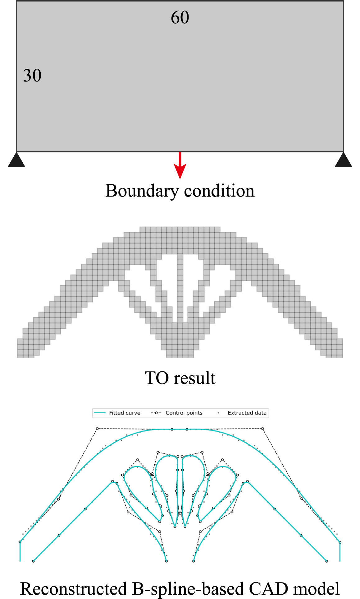 |
From density to CAD: Automatic and robust CAD model generation of topology optimization results via sparse optimization Zepeng Wen, Xiaoya Zhai, Hongmei Kang. Advances in Engineering Software, November 2025, 209:103977. [Paper] |
| 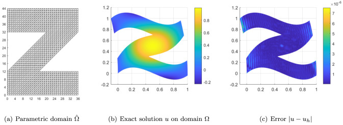 |
Superconvergent isogeometric collocation with box splines Hailun Xu, Hongmei Kang, Falai Chen, Zhimin Zhang. Computer Methods in Applied Mechanics and Engineering, March 2025, 437(11):117763. [Paper] |
2024
| 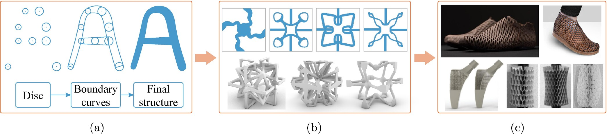 |
Shape Optimization of Tunable Poisson's Ratio Metamaterials With Disk B - Splines Yihui Ye, Nan Zheng, Xiaoya Zhai, Hongmei Kang, Falai Chen. International Journal for Numerical Methods in Engineering, December 2024, 126(1):117763. [Paper] |
| 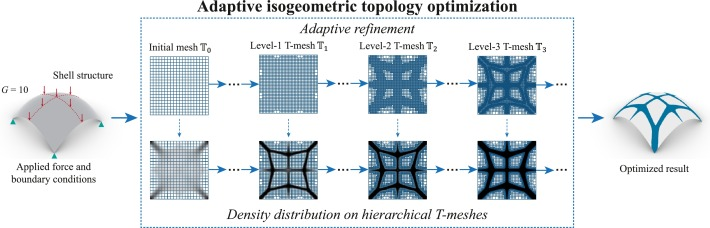 |
Adaptive isogeometric topology optimization of shell structures based on PHT-splines Zepeng Wen, Pan Qiong, Xiaoya Zhai, Hongmei Kang, Falai Chen. Computers & Structures, December 2024, 305:107565. [Paper] |
| 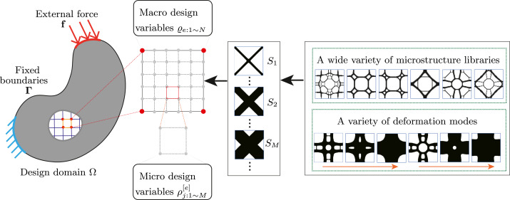 |
Concurrent topology optimization of multiscale composites with differentiable microstructures Jie Gao, Zepeng Wen, Xiaoya Zhai, Falai Chen, Hongmei Kang. Computer Methods in Applied Mechanics and Engineering, November 2024, 431(6353):117271. [Paper] |
| 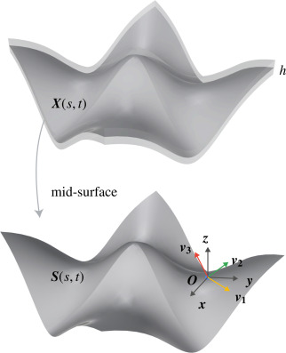 |
Isogeometric Topology Optimization of Multi-patch Shell Structures Pan Qiong, Xiaoya Zhai, Hongmei Kang, Xiaoxiao Du, Falai Chen. Computer-Aided Design, June 2024, 174(13):103733. [Paper] |
| 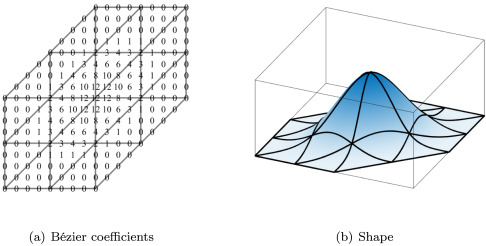 |
The Superconvergent Isogeometric Collocation with Box Splines Hailun Xu, Hongmei Kang, Falai Chen, Zhimin Zhang. Preprint, January 2024, DOI:10.2139/ssrn.4970330. [Paper] |
2023
| 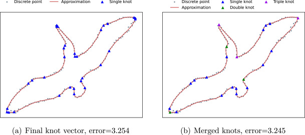 |
The deep neural network solver for B-spline approximation Zepeng Wen, Jiaqi Luo, Hongmei Kang. Computer-Aided Design, December 2023, 169(1):103668. [Paper] |
| 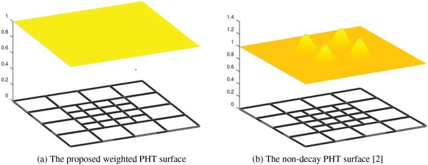 |
The Weighted Basis for PHT-Splines Zhiguo Yong, Hongmei Kang, Falai Chen. Computer Modeling in Engineering & Sciences, September 2023, 138(1):739-760. [Paper] |
2022
| 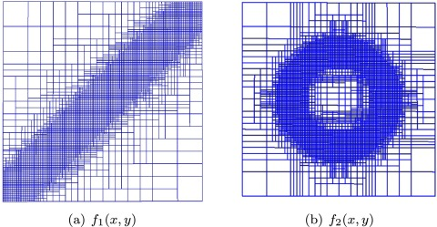 |
Quasi-interpolation for analysis-suitable T-splines Hongmei Kang, Zhiguo Yong, X. Li. Computer Aided Geometric Design, September 2022, 98(1-2):102147. [Paper] |

|
Isogeometric analysis based on modified Loop subdivision surface with improved convergence rates Hongmei Kang, Wenkai Hu, Zhiguo Yong, X. Li. Computer Methods in Applied Mechanics and Engineering, August 2022, 398(39-41):115258. [Paper] |
| 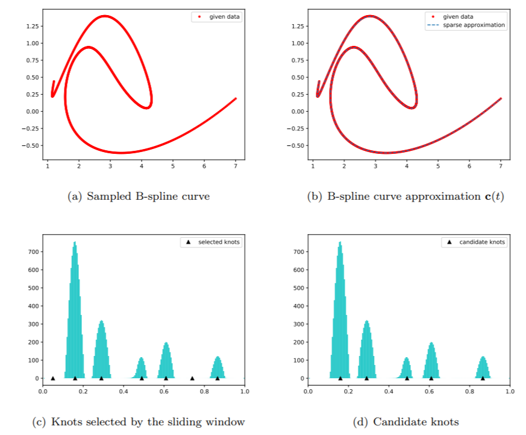 |
Knot Placement for B-Spline Curve Approximation via L∞,1-Norm and Differential Evolution Algorithm Jiaqi Luo, Hongmei Kang, Zhouwang Yang. Journal of Computational Mathematics, June 2022, 40(4):592-609. [Paper] |
2021
| 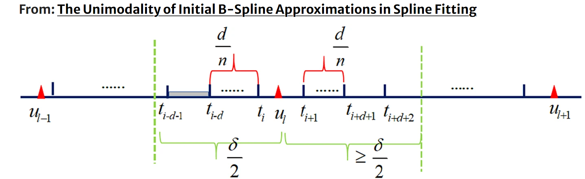 |
The Unimodality of Initial B-Spline Approximations in Spline Fitting Zhiguo Yong, Hongmei Kang, Zhouwang Yang, Yi Gu. Communications in Mathematics and Statistics, August 2021, 10(3):1-22. [Paper] |
Earlier
| 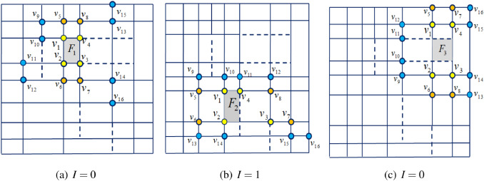 |
de Boor-like evaluation algorithm for Analysis-suitable T-splines Hongmei Kang, X. Li. Graphical Models, September 2019, 106(23-24):101042. [Paper] |
| 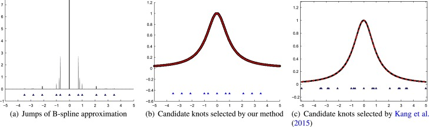 |
Knot Calculation for Spline Fitting based on the Unimodality Property Jiaqi Luo, Hongmei Kang, Zhouwang Yang. Computer Aided Geometric Design, July 2019, 73:101042. [Paper] |
| 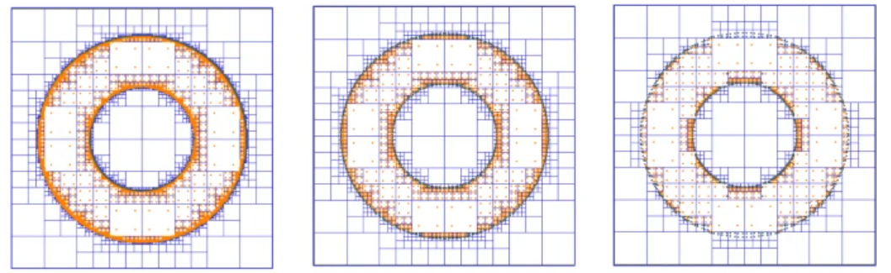 |
Numerical Integration Over Implicitly Defined Domains with Topological Guarantee Yang Tianhui, Ammar Qarariyah, Hongmei Kang, Jiansong Deng. Communications in Mathematics and Statistics, June 2019, 7(4):1-16. [Paper] |
| 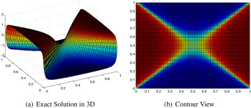 |
An economical representation of PDE solution by using compressive sensing approach Hongmei Kang, Ming-Jun Lai, X. Li. Computer-Aided Design, May 2019, 115(39-41):101042. [Paper] |
| 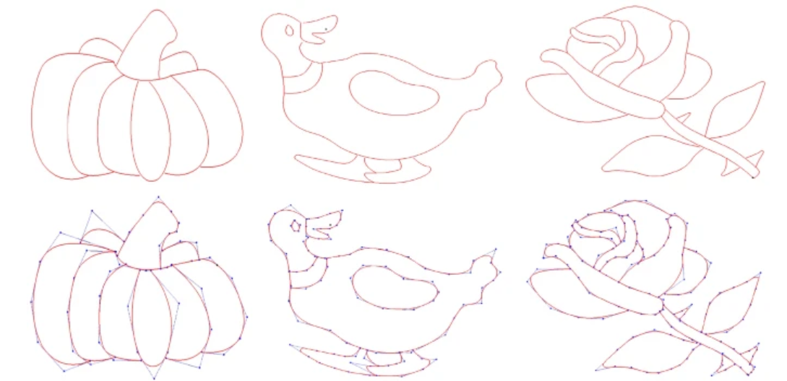 |
A New Method to Design Cubic Pythagorean-Hodograph Spline Curves with Control Polygon Hongmei Kang, X. Li. Communications in Mathematics and Statistics, December 2018, 7(3):1-16. [Paper] |
| 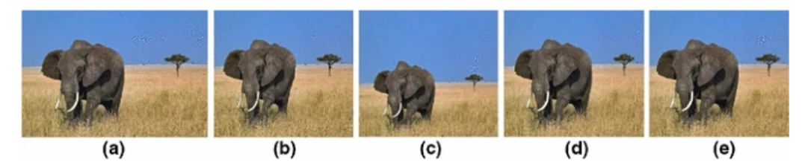 |
Content-aware image resizing using quasi-conformal mapping Jinlan Xu, Falai Chen, Hongmei Kang. The Visual Computer, March 2018, 34(7):1-16. [Paper] |
| 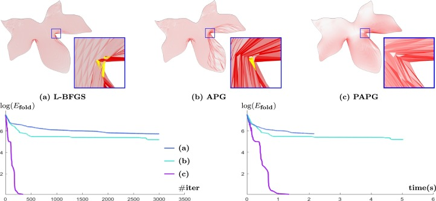 |
Computing IGA-suitable Planar Parameterizations by PolySquare-enhanced Domain Partition Shiwei Xiao, Hongmei Kang, Fu Xiao-Ming, Falai Chen. Computer Aided Geometric Design, March 2018, 62:1-16. [Paper] |
| 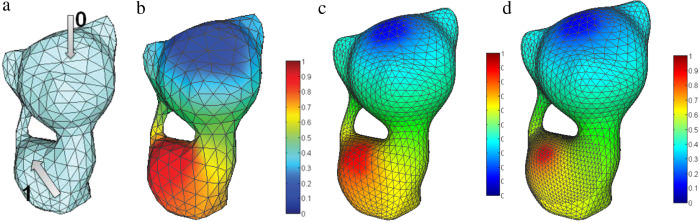 |
Truncated Hierarchical Loop Subdivision Surfaces and application in isogeometric analysis Hongmei Kang, X. Li, Falai Chen, Jiansong Deng. Computers & Mathematics with Applications, July 2016, 72(8):1-16. [Paper] |
| 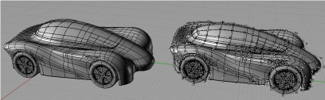 |
A survey on the local refinable splines X. Li, Falai Chen, Jiansong Deng, Hongmei Kang. Science China Mathematics, January 2016, 59(4):1-16. [Paper] |
| 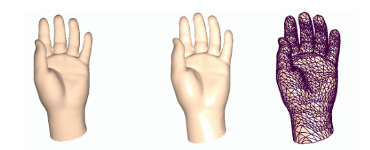 |
Hierarchical Box Splines Hongmei Kang, Falai Chen, Jiansong Deng. 2015 14th International Conference on Computer-Aided Design and Computer Graphics (CAD/Graphics), August 2015, DOI:10.1109/CADGRAPHICS.2015.20. [Paper] |

|
A new basis for PHT-splines Hongmei Kang, Jinlan Xu, Falai Chen, Jiansong Deng. Graphical Models, June 2015, 82:1-16. [Paper] |
| 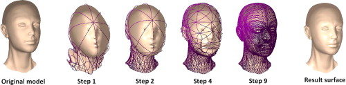 |
Hierarchical B-splines on Regular Triangular Partitions Hongmei Kang, Falai Chen, Jiansong Deng. Graphical Models, September 2014, 76(5):1-16. [Paper] |
| 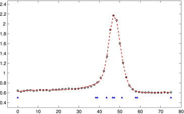 |
Knot calculation for spline fitting via sparse optimization Hongmei Kang, Falai Chen, Yusheng Li, Jiansong Deng, Zhouwang Yang. Computer-Aided Design, August 2014, 58(9):1-16. [Paper] |
| 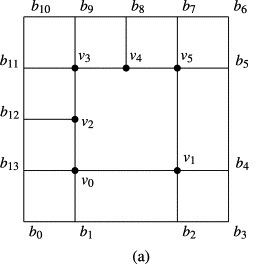 |
Modified T-splines Hongmei Kang, Falai Chen, Jiansong Deng. Computer Aided Geometric Design, December 2013, 30(9):827-843. [Paper] |